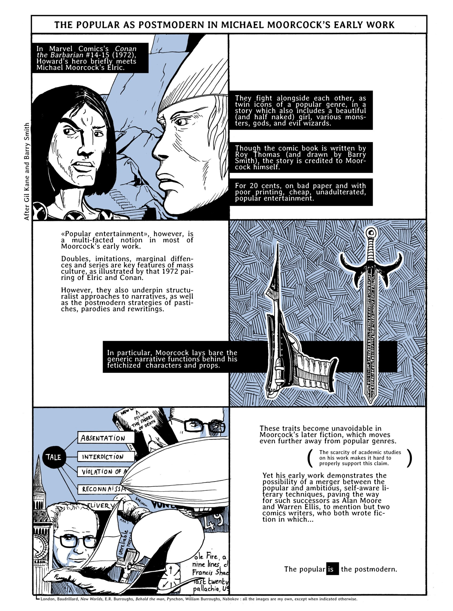
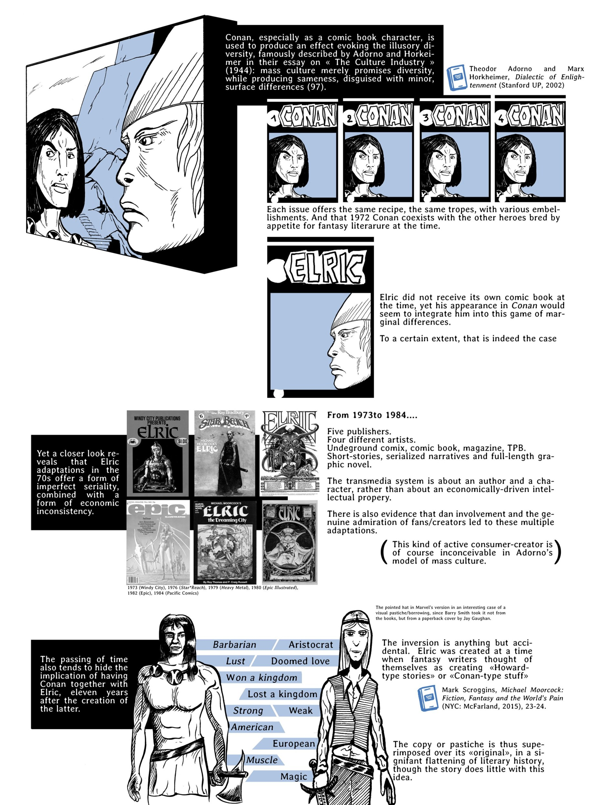
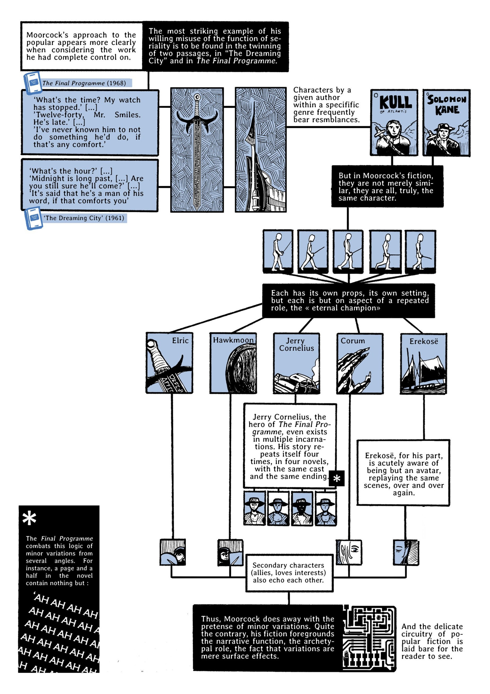
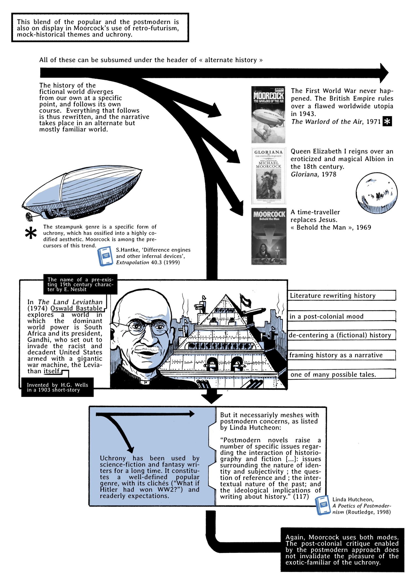
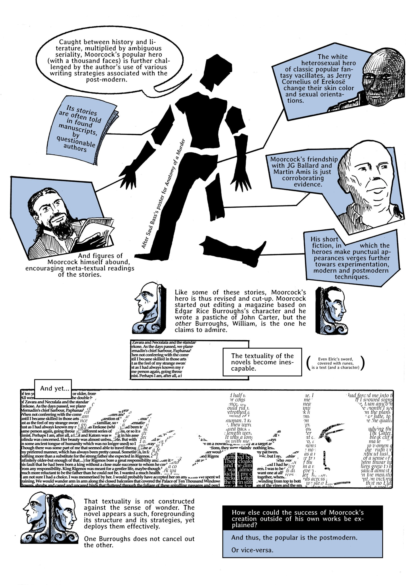

Nicolas Labarre, University Bordeaux Montaigne, France
Posted: 6 June 2017
    Nicolas Labarre is an assistant lecturer in American society and culture at University Bordeaux Montaigne, France. His research focuses on North-American comics, with an emphasis on issues of genre, legitimacy and adaptation. By creating comics himself, he seeks to approach these subjects from a practical as well as theoretical angle. He maintains a research blog, which can be found at http://picturing.hypotheses.org/ and he has recently published Heavy Metal, l’autre Métal Hurlant (PUB, 2017), a cultural history of Heavy Metal magazine. He is also the author of several novels and children books.
Recommended citation:
Labarre, Nicolas. “The Popular as Postmodern in Michael Moorcock’s Early Work.” Sequentials, no. 1, 2017.